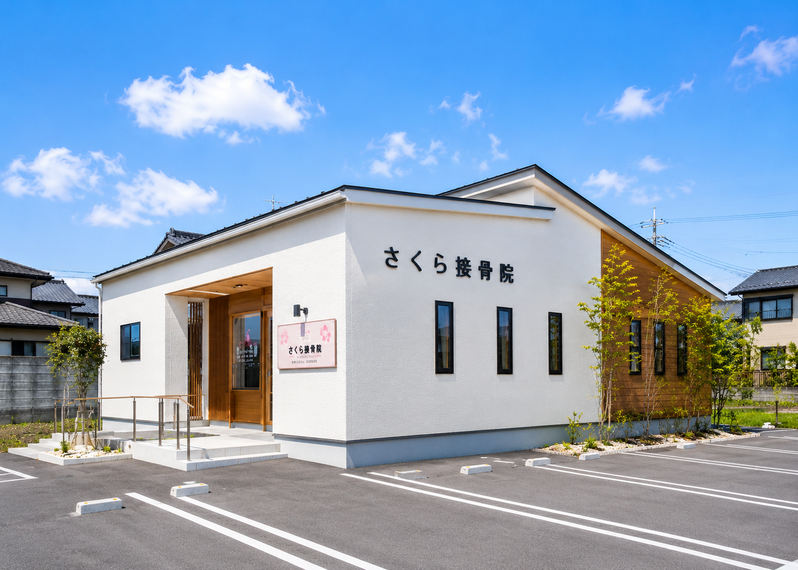

大阪市北区で交通事故後のむちうち・首肩腰の
不調にお悩みの方へ。
自賠責保険適用の場合、自己負担 0 円 でご相談いただけます
※ 月〜金 9:00〜20:00 土 9:00〜14:00 日祝休診
Scroll
交通事故後は、時間が経ってから不調が現れるケースも少なくありません。
事故後から首が痛い
むちうち症状の代表的なサインです。
むちうちのような違和感がある
軽い違和感でも早めのご相談を。
肩や背中が重だるい
衝撃による筋肉・関節への影響が考えられます。
腰に痛みや違和感がある
後部座席や同乗者も症状が出る場合があります。
頭痛やめまいが続いている
頸部への影響から起こることがあります。
病院では異常なしと言われたが不調がある
画像に写らない症状にも対応しています。
ひとつでも当てはまる方は、お早めにご相談ください
むちうちや首肩腰の痛みなど、交通事故後の症状に対して経験のある施術者が丁寧に対応します。
自賠責保険が適用される場合、費用のご負担なくご相談・通院いただけるケースがあります。
お体の状態をしっかりお聞きし、一人ひとりに合わせた施術プランをご提案します。
平日は20:00まで受付。お仕事帰りや日中忙しい方も無理なく通える診療時間です。
保険会社への対応や書類のことなど、不安なことがあればお気軽にご相談ください。
初めてのご来院も、丁寧にご案内します。
STEP 1
電話またはWebよりお気軽にご連絡ください。
STEP 2
事故状況とお体の状態をお伺いします。
STEP 3
姿勢・可動域など、状態を確認します。
STEP 4
状態に合ったプランをご説明します。
STEP 5
継続的なサポートでお体の回復をお手伝いします。
STEP 1
電話またはWebよりご連絡ください。
STEP 2
事故状況とお体の状態をお伺いします。
STEP 3
姿勢・可動域など確認します。
STEP 4
状態に合ったプランをご説明します。
STEP 5
継続サポートで回復をお手伝いします。
| メニュー | 料金（税込） |
|---|---|
| 初回カウンセリング | ¥2,000 |
| 整体施術 | ¥5,500 |
| 部分ケア | ¥3,500 |
| メンテナンス施術 | ¥4,500 |
※ 症状や状態によって施術内容が異なる場合があります。詳しくはカウンセリング時にご説明します。
実際にご来院された方からいただいたご感想です。
"
事故後、首の痛みが続いていましたが、初めての整骨院で不安でした。丁寧に説明してもらえて、保険のことも分かりやすく教えていただき、安心して通えています。
T.K. 様
"
追突事故で腰が痛くなり、病院では異常なしと言われて困っていました。こちらで丁寧に診ていただき、自己負担なく通院できて本当に助かりました。
M.S. 様
"
平日の夜まで診てもらえるので助かっています。首と肩の不調が続いていましたが、状態を確認しながら丁寧に対応してもらっています。
H.Y. 様
Director / Kenta Yamamoto
柔道整復師
柔道整復師として整骨院勤務を経て、交通事故後の不調に悩む方をサポートするため、さくら整骨院を開院。
交通事故後の不調は、見た目では分かりにくく、つらさを一人で抱えてしまう方も少なくありません。丁寧なカウンセリングを通してお身体の状態を確認し、一人ひとりに合わせた施術をご提案しています。どんな小さなことでもお気軽にご相談ください。
痛みが軽くても、後から不調が出る場合があります。気になる症状がある場合は早めのご相談をおすすめします。
状況により適用できる場合があります。詳しくはご相談時に確認いたします。
自賠責保険が適用される場合、自己負担0円で通院できるケースがあります。適用条件については無料相談にてご確認いただけます。
状況により併用できる場合があります。現在の通院状況をお聞かせいただければ、対応可能かご案内します。
可能ですが、待ち時間を避けるため事前予約をおすすめしています。
| 曜日 | 午前 | 午後 |
|---|---|---|
| 月〜金 | 9:00〜13:00 | 15:00〜20:00 |
| 土 | 9:00〜14:00 | — |
| 日・祝 | 休診 | |
※ 受付は診療終了30分前まで

むちうち・首肩腰の痛み・違和感など、まずはお気軽に無料相談をご利用ください。保険のことや通院のご不安も、丁寧にご案内いたします。
月〜金 9:00〜20:00 土 9:00〜14:00 日祝休診